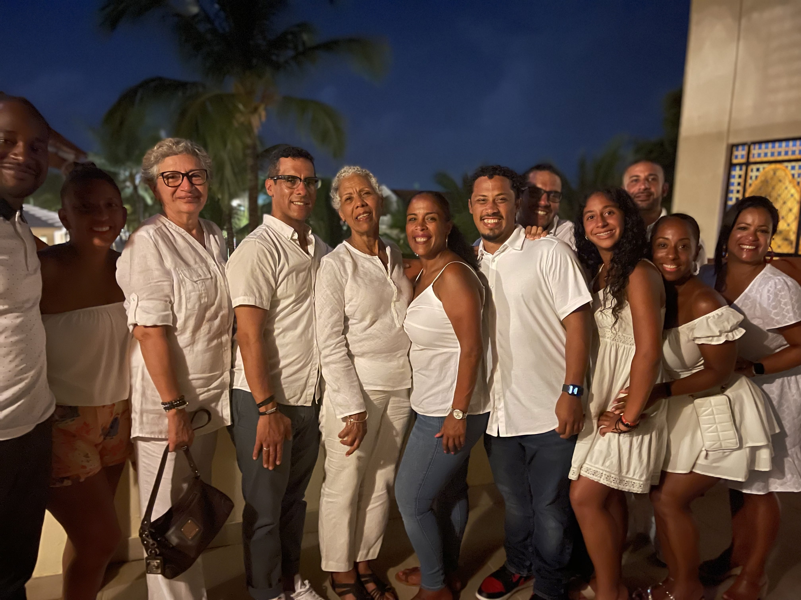

The Dominican Republic
The Dominican Republic, located in the caribbean, is known for the beaches, monuments, land, and baseball. It is a fun place to vacation as a tourist, and an even more fun place to visit as a native.
Here are things to do when visiting The Dominican Republic:
- Visit one of the beaches. The Dominican Republic is an island in the caribbean, so there are beaches everywhere! Bávaro Beach is a beach located in Punta Cana, which is a major tourist attraction. The water is clear, with fish swimming, jet skis, snorkeling, and much more!

- Visit one of the farms. The Dominican Republic is home to many farms, such as: plaintain farms, tobacco farms, cattle ranches, and a tourist acctraction The Taino Farm.

- Take family vacations. The best memories are made in the best places with the best people! Visit The Dominican Republic today!
